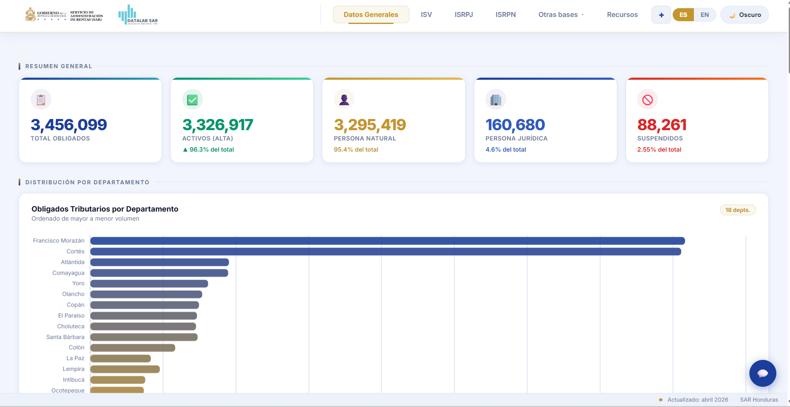
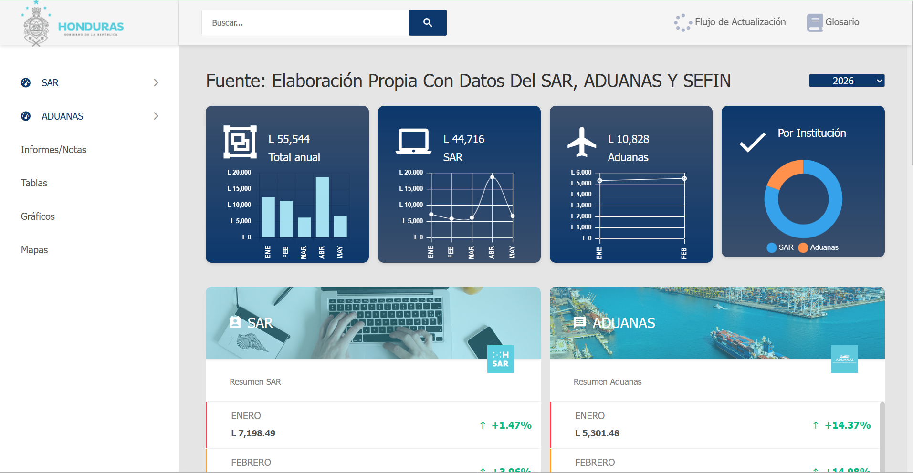
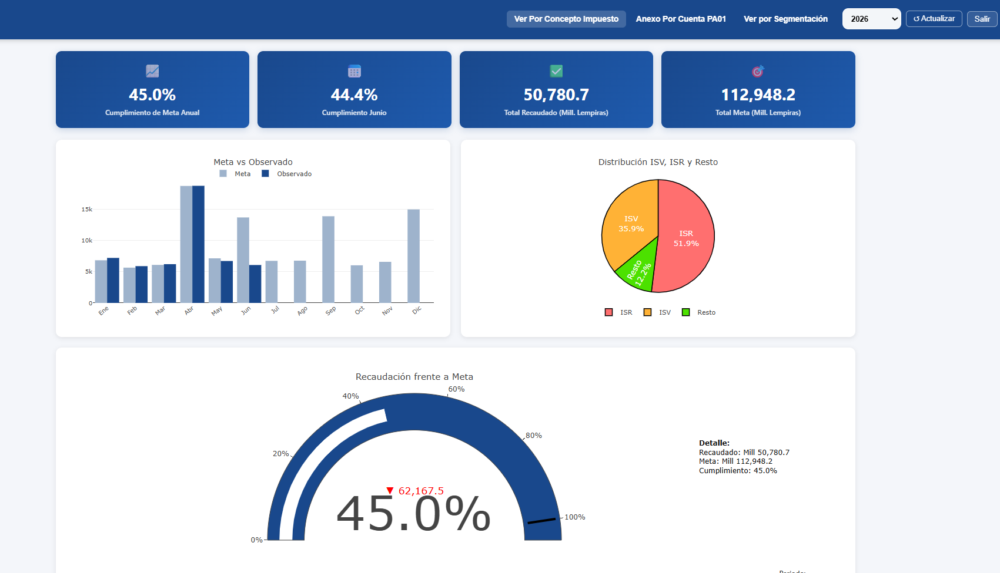
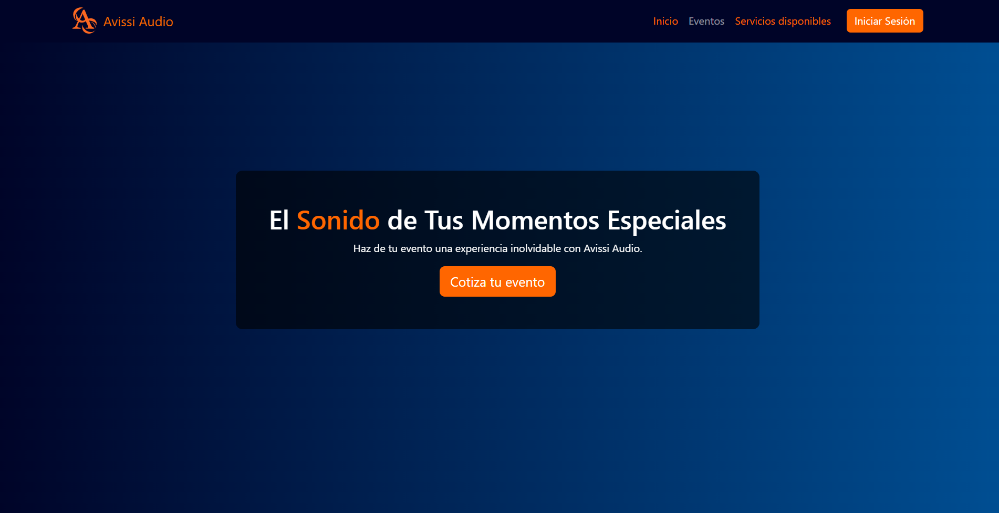

Portafolio
Proyectos en análisis de datos, automatización, visualización, investigación aplicada y desarrollo web.
Confidencialidad de los proyectos
Por ética profesional y la naturaleza sensible de la información tributaria y empresarial, varios de estos proyectos no incluyen enlace de acceso; únicamente se muestran capturas ilustrativas.
- Todos
- Informes
- Dashboards
- Análisis
- Solicitudes
- Automatización
- Sistemas Web

Informe Mensual de Recaudación
Pipeline en Python (orientado a objetos: loader, processor y plotter) que lee desde Google Sheets los datos de SAR y Aduanas preparados en KNIME, calcula variaciones interanuales (mensuales y acumuladas) y los desglosa por impuesto, tipo y tamaño de contribuyente, departamento, municipio y actividad económica. Produce gráficos en matplotlib y mapas SVG, y arma el informe final en LaTeX con plantillas Jinja2 compiladas con latexmk.


{kind=link}

Dashboard DataLab SAR
Aplicación R Shiny alimentada por un pipeline que conecta a Oracle, ejecuta consultas SQL y aplica control de calidad y transformaciones en R. Visualiza obligados tributarios, ISR de personas jurídicas y naturales y ventas, con figuras en Python y un asistente integrado (DataLab Bot).
{kind=link}
{kind=link}

{kind=link}

{kind=link}
{kind=link}

{kind=link}
{kind=link}
{kind=link}

Creative Dreams – Sistema Web
Sistema web en Flask con Supabase para planificación de eventos: panel interno (eventos, clientes, proveedores, catálogo, cotizaciones y pagos), portal del cliente con documentos e itinerario, y página pública por evento con galería, cuenta regresiva, mesa de regalos y RSVP.
{kind=link}